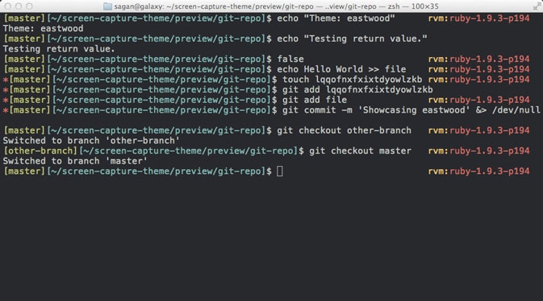
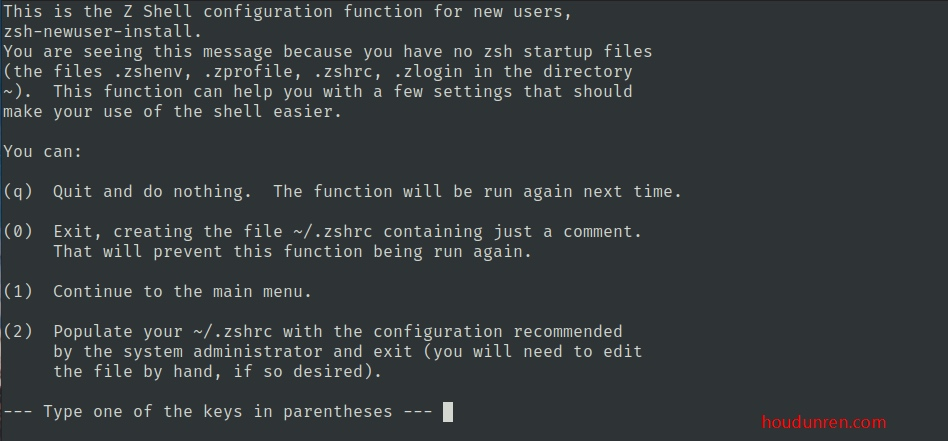
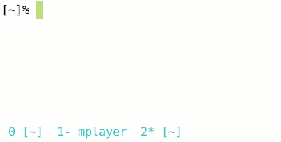

安装命令
zsh 可以提高终端使用体验，是命令行终端必装软件，下面介绍安装方法
Mac
在 mac 上还是建议使用 item 做为命令行终端，先安装 xcode。
# 如果没有 brew 命令请自行安装 https://brew.sh/
brew install zsh zsh-completions
chsh -s /bin/zsh
# 如果没有 port 命令，需要先安装 https://www.macports.org/install.php
# 安装后需要执行 export PATH=/opt/local/bin:/opt/local/sbin:$PATH
sudo port install zsh zsh-completions
ubuntu
# 安装zsh
sudo apt install zsh
# 查看版本号，检测安装是否成功
zsh --version
# 设置默认shell
chsh -s $(which zsh)
# 注销帐号后执行，查看当前shell是否是zsh
echo $SHELL
centos
安装软件
sudo yum update && sudo yum -y install zsh
# 设置当前用户默认 shell
chsh -s /bin/zsh
# 或
sudo usermod -s $(which zsh) 用户名
# 注销帐号后执行，查看当前 shell 是否是 zsh
echo $SHELL
oh my zsh
oh my zsh 是管理 ZSH 的配置，并提供了丰富的插件

软件安装
因为是国外资源可能下载不成功，多试几次
sh -c "$(curl -fsSL https://raw.github.com/ohmyzsh/ohmyzsh/master/tools/install.sh)"
如果上面的不行，试试下面的命令
sh -c "$(curl -fsSL https://raw.githubusercontent.com/ohmyzsh/ohmyzsh/master/tools/install.sh)"
如果还是不能下载，就再试试下面的命令
sh -c "$(curl -fsSL https://gitee.com/shmhlsy/oh-my-zsh-install.sh/raw/master/install.sh)"
初始配置
第一次安装后，需要注销后重新登录。之后会显示如下初始配置界面，选择q退出

主要在配置文件 ~/.zshrc 中修改设置。
有些软件比如 LINUXBREW，的配置荐在
~/.profile文件中，安装了 zsh 就需要复制到 `~/.zshrc ｀文件头部
修改主题
ZSH 拥有丰富的主题
修改配置文件 ~/.zshrc 中的 ZSH_THEME 来设置使用的风格
ZSH_THEME="bira"
更新配置也可以选择重起终端
source ~/.zshrc
插件扩展
配置文件
插件需要修改
~/.zshrc配置文件中的plugins配置段在目录
~/.oh-my-zsh/plugins中默认存在了大量插件，只要添加到配置项中即可。更新配置后使用
source ~/.zshrc命令重新加载配置
历史记录
这个插件需要单独下载
git clone https://github.com/zsh-users/zsh-autosuggestions ${ZSH_CUSTOM:-~/.oh-my-zsh/custom}/plugins/zsh-autosuggestions
下载后在配置文件的 plugins 选项的最后面添加即可
plugins=(git history history-substring-search node npm wd web-search last-working-dir vi-mode zsh-autosuggestions)
有时 zsh-autosuggestions 插件的提示颜色看不清，可以通过修改颜色处理。打开配置文件 ~/.oh-my-zsh/custom/plugins/zsh-autosuggestions/zsh-autosuggestions.zsh 修改以下配置项
typeset -g ZSH_AUTOSUGGEST_HIGHLIGHT_STYLE='fg=12'
重新加载
source ~/.zshrc
命令提示
通过安装 incr 插件就可以实现以下命令提示效果

首先下载插件
wget https://mimosa-pudica.net/src/incr-0.2.zsh
加载插件
source incr*.zsh
其他设置
中文乱码
ITERM2本地中文乱码问题
输入 locale 可以查看字符编码设置情况，而我的对应值是空的。
我在本地和服务器都用 zsh 替代了 bash，而且使用了 oh-my-zsh，而默认的.zshrc 没有设置为 utf-8 编码，所以本地和服务器端都要在.zshrc 设置，步骤如下，bash 对应.bash_profile 或.bashrc 文件。
编辑 ~/.zshrc 文件或 /etc/profile文件，在文件内容末端添加：
export LC_ALL=en_US.UTF-8
export LANG=en_US.UTF-8
接着加载文件source ~/.zshrc并重启终端。
设置成功的话，在本地和登录到服务器输入 locale 回车会显示下面内容。
LANG="en_US.UTF-8"
LC_COLLATE="en_US.UTF-8"
LC_CTYPE="en_US.UTF-8"
LC_MESSAGES="en_US.UTF-8"
LC_MONETARY="en_US.UTF-8"
LC_NUMERIC="en_US.UTF-8"
LC_TIME="en_US.UTF-8"
LC_ALL="en_US.UTF-8"
默认编辑器
在 ~/.zshrc或~/.bashrc配置文中件添加以下指令。例: export EDITOR=code 是将默认编辑器修改为 vscode
来源：ZSH软件安装
本文由 Sajor
创作，采用 知识共享署名4.0 国际许可协议进行许可
本站文章除注明转载/出处外，均为本站原创或翻译，转载前请务必署名
最后编辑时间为: 2022-06-25T19:00:24+08:00